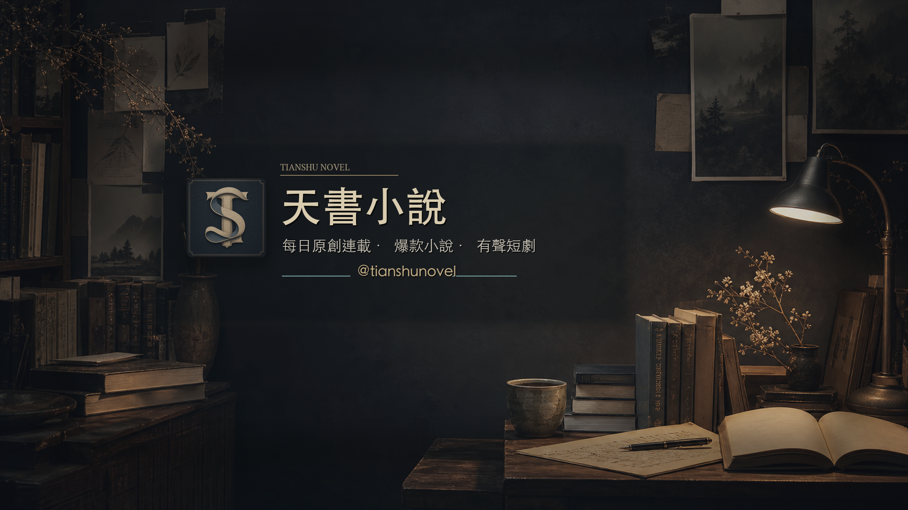

Featured Originals
五部重點連載，每個整點都往更深的世界推進。
這裡整理天書小說目前集中更新的五部作品。每一本都有獨立作者聲線、主角命運、長線伏筆與有聲內容規劃。


玄幻
星骸王座
霜河雪線外，沈曜第一次聽見星核說謊，也第一次知道自己每往前一步，都會看見一種死法。

奇幻
灰塔觀測者
灰塔的晨光少了一塊，艾文只是在簿冊上補了一筆，整座塔卻像忽然記起某個不該存在的人。

武俠
雪刃照孤城
孤城大雪封門，沈照夜聽見一聲不該存在的刀鳴；那一夜開始，舊案、暗道與欠下的命全都醒了。

都市
凌晨三點的演算法
凌晨三點，周祈的手機推送了自己的死訊。真正可怕的不是預測錯誤，而是有人正在讓預測成真。

歷史
大明墨工
沈墨在御用輿圖下看見一條不存在的河；墨線一動，藏在河工、糧道與官場裡的殺局也跟著浮上來。